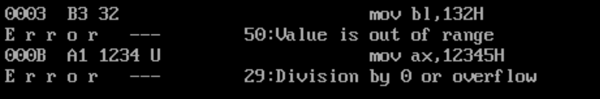

Assembly
0XFF
几个刚接触汇编语言都会遇到的问题：
- 写程序的时候对于16进制要加H吗
debug和编译器对此的要求是不同的
我们在编写.asm文件时，不加H默认为10进制，加H表示为16进制，若像4c00不加H，编译时报错Non-digit in number，因为不加H默认为10进制，而10进制中是不允许出现字母的，也有些编译器要求以0x开头表示16进制
而debug中默认所有数字都是16进制。比如用A命令输入mov ax,100a，不用加H，否则出错
在将.asm文件编译连接之后，使用debug对程序的执行进行跟踪时，会将源程序中的mov ax,10变为mov ax,000A
版权声明：本文为CSDN博主「tmhhh」的原创文章，遵循CC 4.0 BY-SA版权协议，转载请附上原文出处链接及本声明。 原文链接：https://blog.csdn.net/weixin_43569916/article/details/104311221
0x00 寻址方式[ ]
我觉得寻址方式是学习整个汇编语言之前必须要了解的一个东西,很多的教科书把寻址方式分为了很多类,大抵是以下三种类型
- 立即数寻址
- 寄存器寻址
- 存储器寻址
立即数寻址
很多指令的结构其实很相似，无非是
;操作指令 操作数1,操作数2
若操作数不需要经过寻找,直接写在代码段里,并随代码进入指令队列,可以让CPU直接获取,那这种寻址方式就叫做立即数寻址。立即数寻址不需要消耗总线周期,原因是它先前已经被总线消耗时间送入指令队列,CPU从指令队列获取立即数不需要消耗总线周期。下面给几个例子
mov ax,0100H
mov al,01H
mov ah,01H
上面这三种是属于比较平常的例子,将一个立即数传入一个寄存器,这些语句都是合法的。
mov ax 123H
mov al 1H
上面两种是对于一个16位的寄存器传入一个不足16位的立即数,经过MASM编译通过，即这样写是可以的。
mov ax 12345H
mov al 123H
上面两种是对于一个16位的寄存器传入一个超过十六位的立即数,经过MASM编译报错，即这样写的不行的。

不过有趣的是两种溢出的报错是不一样的，此项待考察。
mov 1234H,ax
上面是用一个立即数作为目标操作数，用脚趾头想也知道是不可能的。
0x01 MOV
赋值/移动/balabala，用于从源操作寄存器向目标操作寄存器传输数据。
;;;;;;;;;;;;;;;;;;;;;;;;;;;;;;;;;;;;;;;;;;;;;;;;;;;;;;;;;;;;;;;;;;;;;;;;;;;
; 基本用法 ;
;;;;;;;;;;;;;;;;;;;;;;;;;;;;;;;;;;;;;;;;;;;;;;;;;;;;;;;;;;;;;;;;;;;;;;;;;;;
; mov 寄存器,数据
mov ax,8
; mov 寄存器,寄存器
mov ax,bx
; mov 寄存器,内存单元
mov ax,[0]
; mov 内存单元,寄存器
mov [0],ax
; mov 段寄存器,寄存器
mov ds,ax
; mov 寄存器,段寄存器
mov ax,ds
; mov 内存单元,段寄存器
mov [0],cs
; mov 段寄存器,内存单元
mov ds,[0]